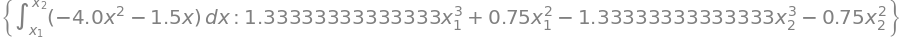
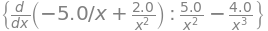

B6.1 Linear Work and Energy#
B6.1.1 Review#
The energy transfer (or work) done on a particle by a single force acting through a distance is
We can write it in component form as (in 2D)
and geometrical form:
Conservative Forces#
Conservative forces are characterized by the fact that the work done is the negative of the change in potential energy:
It may also be appropriate to refresh our memory what a conservative force is: the work done by a conservative force along a closed path is zero.
Non-conservative Forces#
Non-conservative forces are characterized by the fact that the work done is the change in mechanical energy:
Work-Energy Theorem#
Finally, we have the work-energy theorem, which can be stated in short as
or written out as
B6.1.2 Position-varying Force in 1D#
In previous module we saw, how we could apply the impulse-momentum theorem in terms of a force varying with time. Sometimes our forces are not known as a function of time, but instead as a function of position. In this scenario, the work-energy theorem is the concept/tool to use.
For now we will restrict ourselves to 1D case. In Phase A we will expand to 2D and 3D but need some more calculus tools to do so. In the following, we have
B6.1.3 Calculus Forms#
In Equations (1) and (2) we simply replace the differences with differentials.
Conservative Forces#
In 1D component form we have
This is a differential equation, which is very useful in more advanced physics courses. For our purpose, we restrict ourselves to derivatives and integral versions.
The derivative form is
and the integral form is
Since the change in potential energy is the negative work done by the conservative force, we can also write is as
Non-conservative Forces#
In 1D component form we have
This is a differential equation, which is very useful in more advanced physics courses. For our purpose, we restrict ourselves to derivatives and integral versions.
The derivative form is
and the integral form is
Since the change in mechanical energy is the negative work done by the non-conservative force, we can also write is as
General Work#
We notice that the work done by either a conservative or non-conservative force has exactly the same form. It is only when we relate it to energies that there are differences. Hence, for the work only, it may be more convenient to drop the distinction between conservative vs. non-conservative:
Example 1
A force is given by \(f_x = [(2.0x + 4.0x^3)]~\textrm{N}\) and is applied to an object with a mass of 5.00 kg initially at rest. What is the net force done by this force in moving the particle from x = 0.0 m to x = 3.0 m?
Solution
We have the force given as a function of position and can integrate it to find the work done:
Inserting all our information:
Evaluate the integral (using Symbolic Python below):
Work = 90.0000000000000
Example 2
A force is given by \(f_x = [-(1.5x + 4.0x^2)]~\textrm{N}\). Find the potential energy function associated with this force.
Solution
First, we need to check if the force is conservative. Let us consider the net work going from x = 0.0 m to x = 2.0 m (path 1), and then from x = 2.0 m to x = 0.0 (path 2). I will use Symbolic Python as shown below
Net work = 0

Inserting the result of the integration into our equation:
From inspection of this result, we conclude that the potential energy function (in units of J) associated with this force is
Example 3
A potential energy function (in J) is given by \(u = -5.0x^{-1} + 2.0x^{-2}\). Find the conservative force associated with this force.
Solution
We are given the potential energy as a function of position and can therefore find the force from
Inserting our function and finding the derivative:

The force (in N) is then
B6.1.4 Graphical Consequence#
Slope Considerations#
From
we conclude that on a potential energy graph the negative of the slope is the conservative force.
Area Considerations#
Since we have
The work or energy transfer due to a single force is the area bounded by the single force graph and the position axis.
If the force in consideration is the net force then we have
that is, the bound area is the change in the particle’s kinetic energy.
B6.1.5 Work-Energy Theorem#
The famed work-energy theorem does not change.
The difference now is that we may use calculus to find the potential energies and the work by non-conservative forces as outlined above.